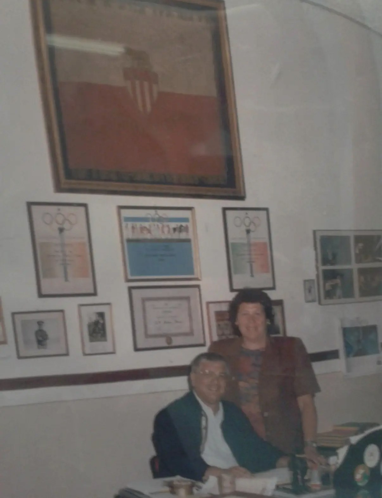

Cesare Venturini
Custode della memoria.
Cesare Venturini ha dedicato una parte fondamentale della propria vita a custodire e tramandare la storia dell’Audace. Il suo lavoro non si è fermato alla conservazione di fotografie, trofei e documenti: ha protetto il significato umano di quei materiali, mantenendo vivo il legame tra le generazioni passate nella sede di Via Frangipane.
Attraverso i suoi racconti, la cura dei cimeli e la conoscenza profonda delle persone che hanno attraversato il club, Cesare ha contribuito a trasformare la memoria dell’Audace in un patrimonio condiviso. Tra le testimonianze più importanti resta il ritrovamento della valigetta appartenuta al pugile audaciano Leone Efrati, successivamente donata alla Fondazione Museo della Shoah: un gesto capace di unire sport, storia e responsabilità della memoria.
La sua figura rappresenta l’idea più autentica di continuità: conoscere ciò che è stato per permettere all’Audace di continuare a essere sé stessa nel presente e nel futuro.